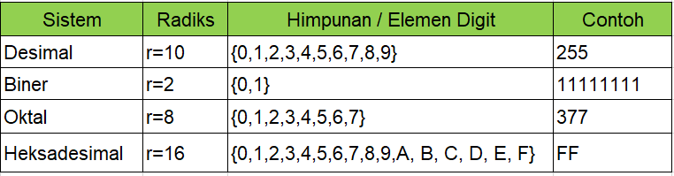

Sistem Konversi Dan Konversi Bilangan
.jpg?1676969394592)
Setelah kalian belajar pada materi array mungkin terdapat beberapa kebingunan buat kalian pada saat mapping pemetaan array terdapat konversi bilangan. Jadi pada materi artikel kali ini kita akan membahas tentang konversi dalam bilangan, yang bisa teman-teman ikuti dan pahami tutorialnya.
Pengertian Konversi Bilangan
Konversi bilangan adalah proses mengubah bentuk bilangan dari satu bentuk ke bentuk bilangan lain yang memiliki nilai sama. Terdapat beberapa sistem bilangan yang umum digunakan, yaitu desimal (basis 10), biner (basis 2), oktal (basis 8), dan heksadesimal (basis 16).
Sistem bilangan ini memiliki peran penting dalam dunia komputer, di mana bilangan biner digunakan untuk representasi data di dalam komputer karena sifatnya yang mudah diimplementasikan dalam sirkuit elektronik.
Macam-macam Sistem Bilangan
.

Contoh Konversi
- Konversi bilangan desimal ke biner, oktal, atau heksadesimal dilakukan dengan membagi bilangan desimal dengan basis bilangan tujuan, kemudian menyimpan sisa hasil bagi per pembagian. Sisa-sisa ini kemudian diurutkan dari yang paling akhir hingga yang paling awal untuk mendapatkan hasil konversi.
- Konversi bilangan biner ke desimal dilakukan dengan menjumlahkan hasil perkalian setiap digit biner dengan pangkat dua yang sesuai dengan posisinya, dimulai dari kanan.
- Konversi bilangan oktal ke desimal juga menggunakan konsep yang sama dengan konversi bilangan biner ke desimal.
- Konversi bilangan heksadesimal ke desimal juga mengikuti konsep yang sama dengan konversi bilangan biner ke desimal.
Konversi Ke Desimal
Konversi Desimal Ke Biner
Konversi Desimal Ke Oktal
Konversi Desimal Ke Heksadesimal
Konversi Biner Ke Oktal
Konversi Oktal Ke Biner
Konversi Biner ke Heksadesimal
Konversi Heksadesimal ke Biner
Lanjutan
Pada artikel materi ini diharapkan sobat dondon dapat membedakan setiap bilangan dan mampu untuk melakukan konversi dari setiap bilangan yang ada. Pada artikel berikutnya setelah kita mempelajari array dan konversi bilangan, kita akan melakukan tes kemampuan dalam latihan mapping pemetaan array pada artikel tutorial Latihan Mapping Array Dimensi 1,2 dan 3